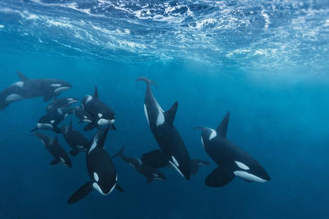
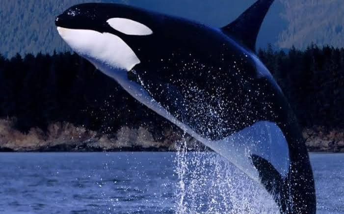
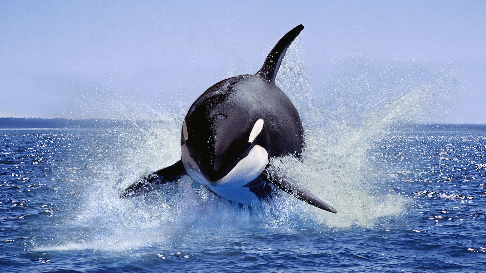
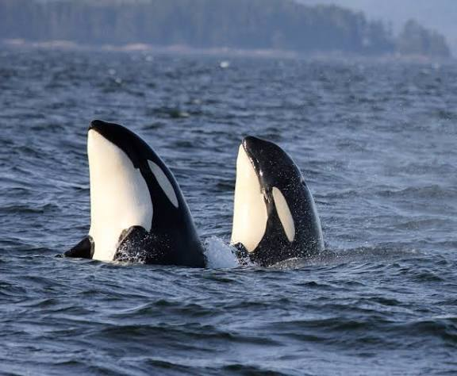
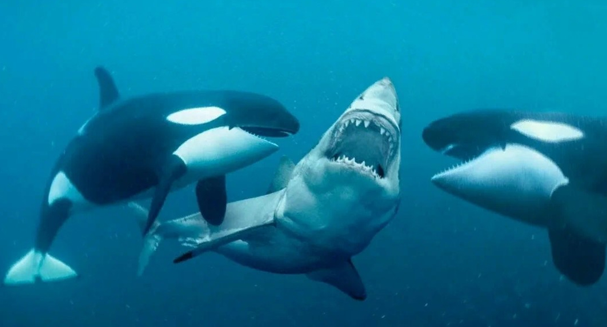

Bầy do con cái dẫn dắt
Orca sống trong những bầy gắn bó chặt chẽ, thường gồm một con cái lớn tuổi cùng con cháu của nó. Con non ở lại với mẹ gần như cả đời. Mỗi bầy có “phương ngữ” riêng gồm tiếng kêu và tiếng huýt, và chúng dùng định vị bằng tiếng vang để tìm mồi.
Thư viện ảnh





